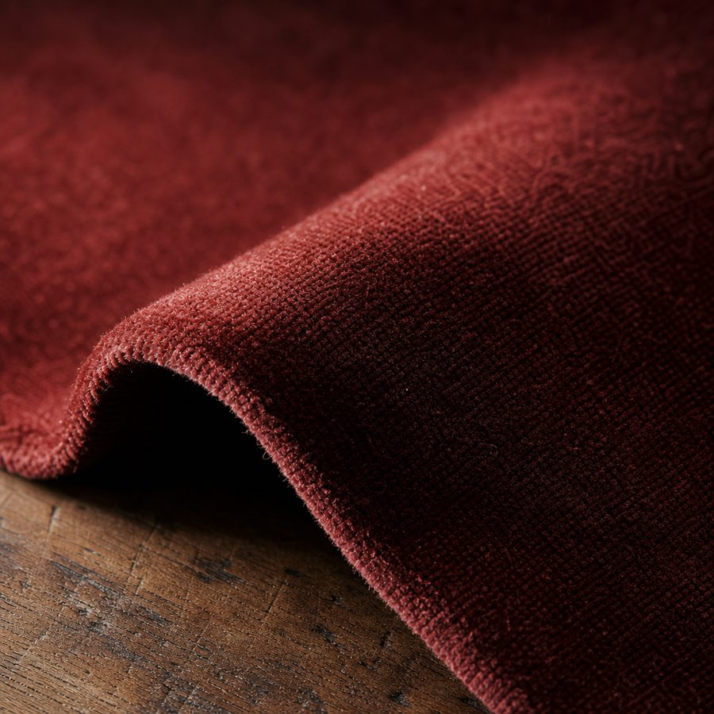
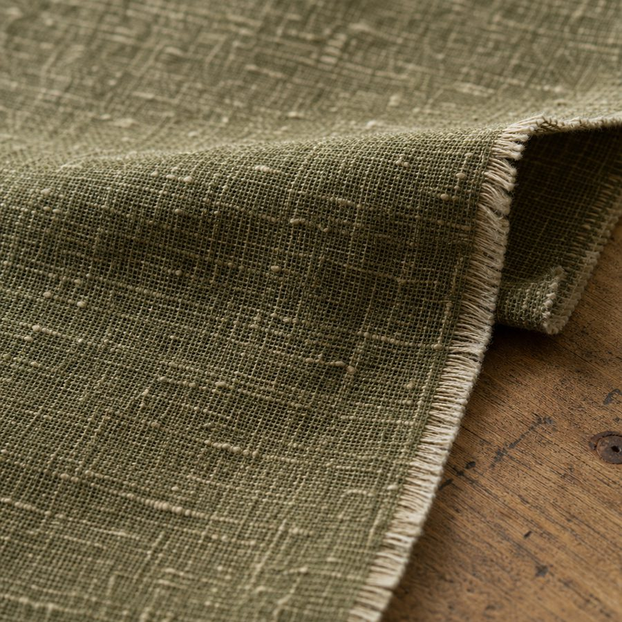
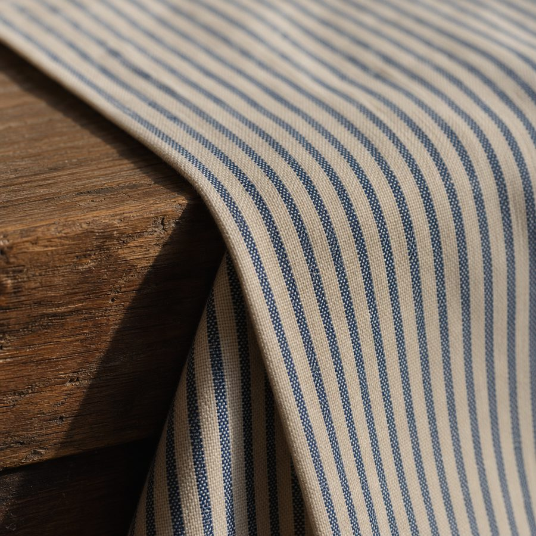
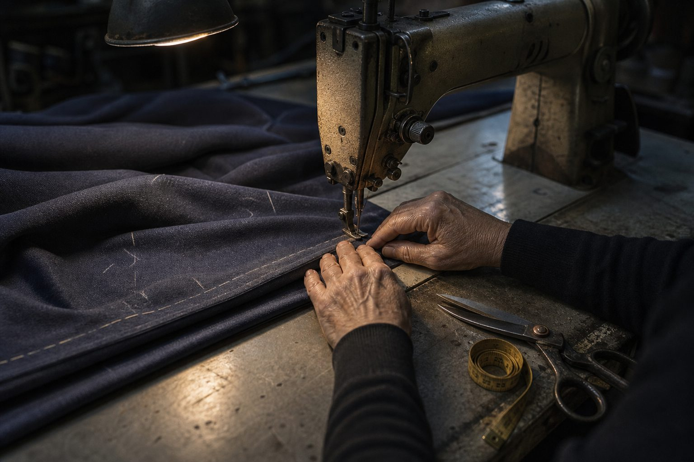

Madder cotton velvet
54″ wide · 100% cotton pile Heavyweight. Chairs, cushions, portière $28 / yard · 14 yards left
Decorator and upholstery fabric, genuine leather and notions by the yard, plus custom drapes, blinds and upholstery measured, sewn and hung by the same people who sell you the cloth.
Mill ends come in one bolt at a time and leave the same way. Here's what's out front right now. When it's gone, it's gone.

54″ wide · 100% cotton pile Heavyweight. Chairs, cushions, portière $28 / yard · 14 yards left

56″ wide · linen / cotton Mid-weight. Drapery, slipcovers, roman shades $22 / yard · 31 yards left

45″ wide · 100% cotton Lightweight. Pillows, valances, bench pads $16 / yard · 9 yards left
Cut to the yard while you wait. Most of what's on the wall is designer mill ends: overruns from the same mills that supply the showrooms, at a fraction of showroom money.
The back of the shop is a working sewing room. Nothing here gets sent out to a factory and shipped back with somebody else's measurements on it.
Most people put off calling because they don't know what they're agreeing to. Here's the whole thing.
Tell us which windows, or bring a photo on your phone. We'll give you a rough range before anyone gets in a truck, so you know whether it's worth going further.
We bring the books and the leather samples to you and measure every window ourselves. You pick fabric, lining and hardware in the room they're going in, under the light they'll live in.
Your panels are cut and sewn in the workroom on Main Street. When they're ready we bring them out, hang them, and adjust the break on the floor before we leave.

This shop opened in the nineteen-sixties and it has been at 207 East Main ever since. When Front Royal marked its 235th year, the town counted House of Fabrics as the oldest continuously operated business downtown.
That is not a sentimental fact. It means the bolt wall has been curated by the same eye for six decades, that there is a chair in the back that has been recovered three times for three generations of one family, and that when you ask whether a fabric will hold up on a stair runner, the answer comes from having watched it.
Come see the wall. It changes every week, and the good pieces go first.
Free parking behind the block. If you're driving in from Winchester, Luray or Warrenton, call ahead and we'll pull anything you want to see before you arrive.
An unsolicited design concept for House of Fabrics, prepared by Ohtari Labs. This is not their website.